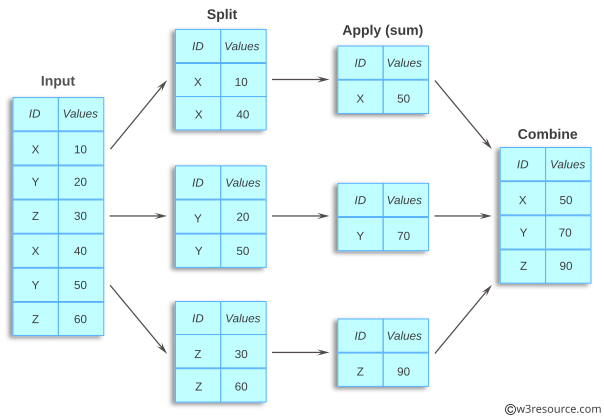

salesIntroduction à Python · L3 Économie-Gestion
DataFrameDataFrameDataFrameRécupérer la donnée (Data sourcing)
⬇️
Nettoyer et préparer la donnée (Data cleaning)
⬇️
Transformer et analyse la donnée (Data processing)
⬇️
Stocker la donnée (Data storage)
⬇️
Visualiser la donnée (Data visualization)
| product | category | quantity | price | date | |
|---|---|---|---|---|---|
| 0 | Apple | Fruit | 3 | 1.5 | 2025-01-10 |
| 1 | Banana | Fruit | 5 | 2.0 | 2025-01-11 |
| 2 | APPLE | Fruit | 2 | 1.5 | 2025-01-10 |
| 3 | Orange | Fruit | 4 | NaN | 2025-01-12 |
| 4 | Banana | Fruit | 5 | 2.0 | 2025-01-11 |
| 5 | Orange | Fruit | 2 | 3.0 | 2025-01-13 |
<class 'pandas.DataFrame'>
RangeIndex: 6 entries, 0 to 5
Data columns (total 5 columns):
# Column Non-Null Count Dtype
--- ------ -------------- -----
0 product 6 non-null str
1 category 6 non-null str
2 quantity 6 non-null str
3 price 5 non-null float64
4 date 6 non-null str
dtypes: float64(1), str(4)
memory usage: 372.0 bytes👉 Quelles sont les 5 anomalies qu’on peut repérer dans ce DataFrame ?
price ;types de données non adéquats (ex. str au lieu de int) ;Lorsqu’on importe des données, les types ne sont pas toujours ceux que l’on souhaite.
| product | category | quantity | price | date | |
|---|---|---|---|---|---|
| 0 | Apple | Fruit | 3 | 1.5 | 2025-01-10 |
| 1 | Banana | Fruit | 5 | 2.0 | 2025-01-11 |
| 2 | APPLE | Fruit | 2 | 1.5 | 2025-01-10 |
| 3 | Orange | Fruit | 4 | NaN | 2025-01-12 |
| 4 | Banana | Fruit | 5 | 2.0 | 2025-01-11 |
| 5 | Orange | Fruit | 2 | 3.0 | 2025-01-13 |
On peut convertir une colonne avec .astype() :
pandas dispose d’un type particulier pour les dates et les heures, qui permet des manipulations rapides (extraction du mois, du jour, calcul de durée, etc.).
Mais à l’import, les données de dates sont souvent représentées comme des chaînes de caractères.
On utilise pd.to_datetime() pour la convertir :
Pour appliquer des méthodes de chaînes de caractères à toute une colonne, on utilise .str.
On peut enlever les espaces avant et après avec
0 Apple
1 Banana
2 APPLE
3 Orange
4 Banana
5 Orange
Name: product, dtype: strIci, on peut combiner les deux opérations sur la colonne product :
.strip().capitalize()sales["product"] = sales["product"].str.strip()
sales["product"] = sales["product"].str.capitalize()
sales| product | category | quantity | price | date | |
|---|---|---|---|---|---|
| 0 | Apple | Fruit | 3 | 1.5 | 2025-01-10 |
| 1 | Banana | Fruit | 5 | 2.0 | 2025-01-11 |
| 2 | Apple | Fruit | 2 | 1.5 | 2025-01-10 |
| 3 | Orange | Fruit | 4 | NaN | 2025-01-12 |
| 4 | Banana | Fruit | 5 | 2.0 | 2025-01-11 |
| 5 | Orange | Fruit | 2 | 3.0 | 2025-01-13 |
Lorsqu’on importe des grands tableaux, ou qu’on agrège des données diverses, il peut y avoir des doublons (lignes identiques).
| product | category | quantity | price | date | |
|---|---|---|---|---|---|
| 0 | Apple | Fruit | 3 | 1.5 | 2025-01-10 |
| 1 | Banana | Fruit | 5 | 2.0 | 2025-01-11 |
| 2 | Apple | Fruit | 2 | 1.5 | 2025-01-10 |
| 3 | Orange | Fruit | 4 | NaN | 2025-01-12 |
| 4 | Banana | Fruit | 5 | 2.0 | 2025-01-11 |
| 5 | Orange | Fruit | 2 | 3.0 | 2025-01-13 |
La méthode drop_duplicates() permet de supprimer les lignes dupliquées.
| product | category | quantity | price | date | |
|---|---|---|---|---|---|
| 0 | Apple | Fruit | 3 | 1.5 | 2025-01-10 |
| 1 | Banana | Fruit | 5 | 2.0 | 2025-01-11 |
| 2 | Apple | Fruit | 2 | 1.5 | 2025-01-10 |
| 3 | Orange | Fruit | 4 | NaN | 2025-01-12 |
| 5 | Orange | Fruit | 2 | 3.0 | 2025-01-13 |
Pour conserver le résultat, il faut réaffecter le DataFrame :
NaN (1/2)pandas représente généralement les valeurs “vides” par NaN (Not a Number).
On peut tester s’il y a des valeurs est manquantes avec isna() :
NaN (2/2)La méthode dropna() supprime les lignes contenant au moins une valeur manquante. On précise la/les colonne(s) à considérer avec le paramètre subset.
La méthode fillna() permet de remplacer les valeurs manquantes par une valeur donnée.
⚠️ Ces méthodes ne modifient pas le DataFrame d’origine : il faut réaffecter le DataFrame ou la colonne pour que lesNaN soient remplacés.
On utilise la méthode .sort_values().
| product | category | quantity | price | date | |
|---|---|---|---|---|---|
| 0 | Apple | Fruit | 3 | 1.5 | 2025-01-10 |
| 2 | Apple | Fruit | 2 | 1.5 | 2025-01-10 |
| 1 | Banana | Fruit | 5 | 2.0 | 2025-01-11 |
| 5 | Orange | Fruit | 2 | 3.0 | 2025-01-13 |
| 3 | Orange | Fruit | 4 | NaN | 2025-01-12 |
On utilise la méthode .sort_index().
On dispose d’un tableau sales contenant des ventes :
| store | category | product | quantity | revenue | |
|---|---|---|---|---|---|
| 0 | Lyon | Fruit | Apple | 10 | 15.0 |
| 1 | Paris | Fruit | Banana | 15 | 30.0 |
| 2 | Lyon | Vegetable | Carrot | 8 | 16.0 |
| 3 | Paris | Vegetable | Potato | 12 | 18.0 |
| 4 | Lyon | Fruit | Banana | 5 | 10.0 |
| 5 | Paris | Fruit | Apple | 7 | 10.5 |
👉 Comment calculer le chiffre d’affaires total de chaque magasin ?
On pourrait filtrer les lignes correspondant à chaque magasin et calculer leur somme.
Mais pandas propose une méthode plus directe : groupby().
groupby()groupby() réalise un partitionnement du DataFrame en plusieurs sous-groupes.
groupby()👉 Calculons le chiffre d’affaire par magasin.
Il faut faire des sous-groupes selon la colonne store :
groupby()👉 Calculons le chiffre d’affaire et le nombre total de produits vendus par magasin.
Même méthode, mais on doit faire la somme de deux colonnes (revenue et quantity) :
⚠️ Notons les doubles crochets, comme quand on sélectionne plusieurs colonnes d’un DataFrame.
.groupby() (1/2)Après un .groupby(), on peut utiliser n’importe quelle fonction NumPy ou Pandas compatible avec une Series :
On peut également regrouper selon plusieurs colonnes :
.groupby() (2/2)On utilise souvent la méthode .agg() après un .groupby() pour appliquer plusieurs fonctions à la fois.
DataFramepandas permet de produire rapidement des graphiques avec .plot().
Le paramètre kind permet de choisir le type de graphique.
Par exemple, un diagramme en bâtons :
On peut préciser les colonnes à utiliser avec x et y :
On peut parcourir les lignes d’un DataFrame avec .iterrows().
Cette méthode renvoie, à chaque itération :
Series.🔴 En général, on évite de parcourir les lignes une par une.
Pandas est conçu pour effectuer des opérations sur des colonnes entières.
| product | quantity | price | |
|---|---|---|---|
| 0 | Apple | 10 | 1.5 |
| 1 | Banana | 15 | 2.0 |
| 2 | Orange | 8 | 3.0 |
Par exemple, pour calculer le montant de chaque vente :
➡️ iterrows() est utile dans certains cas, mais il ne doit pas être le réflexe.
| Notion | Syntaxe |
|---|---|
| convertir les types | .astype(), pd.to_datetime() |
| supprimer des doublons | drop_duplicates() |
gérer les NaN |
.fillna(), .dropna() |
| trier | .sort_values(), .sort_index() |
| regrouper, aggréger | .groupby(), .agg() |
| tracer un graphique | .plot() |
| boucler sur les lignes | .iterrows() |
Faire les exercices du TD6
Introduction à Python — L3 Économie-Gestion